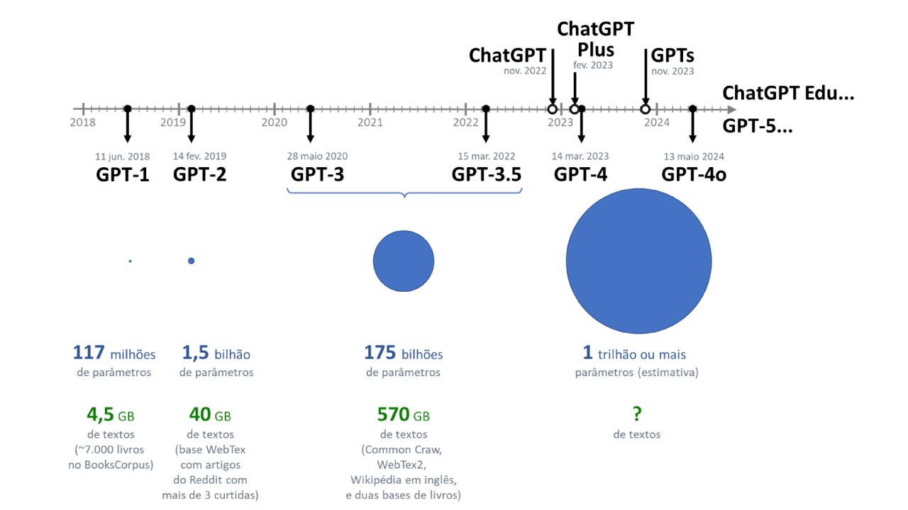
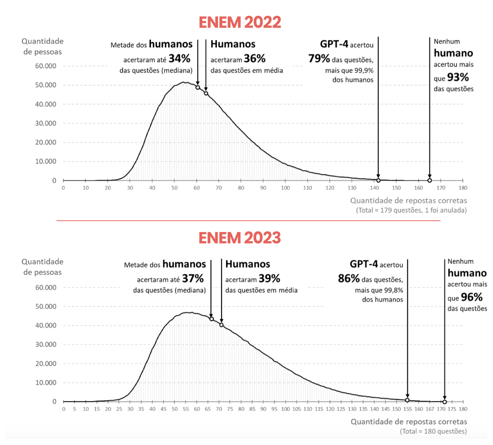
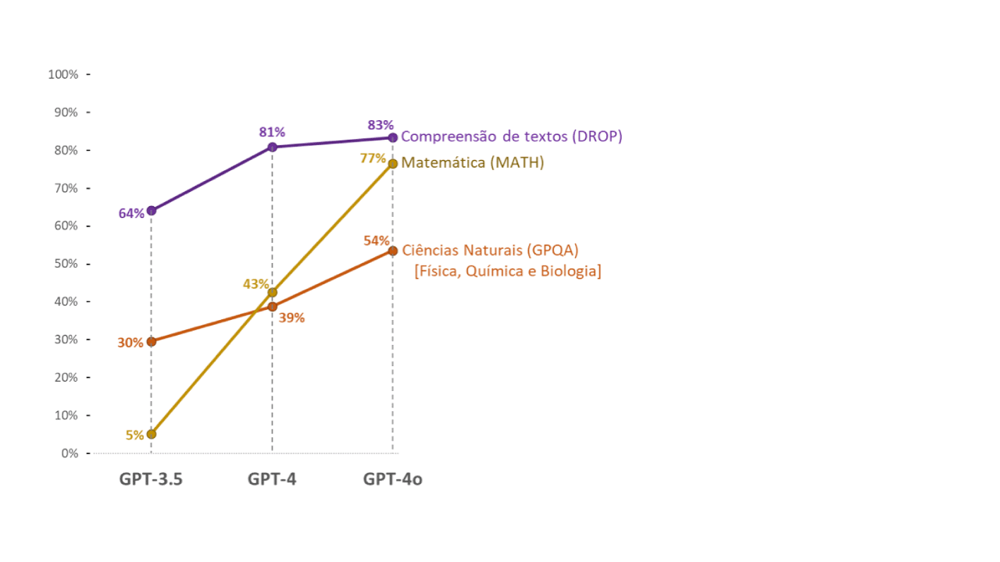
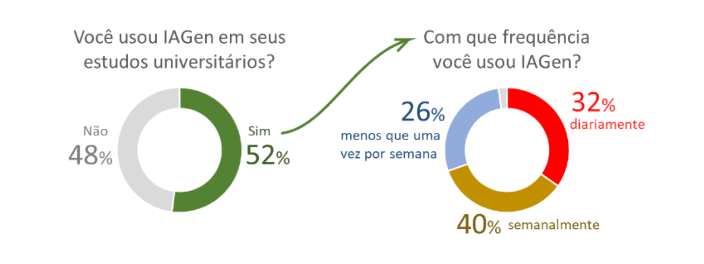
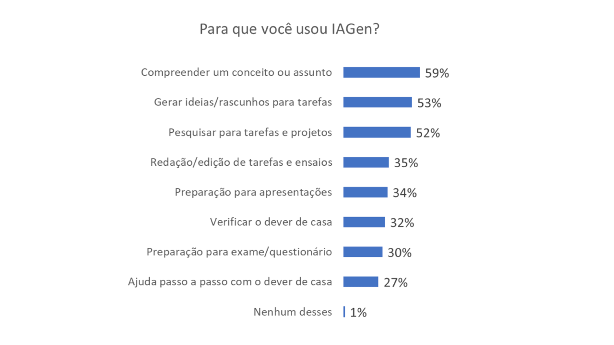
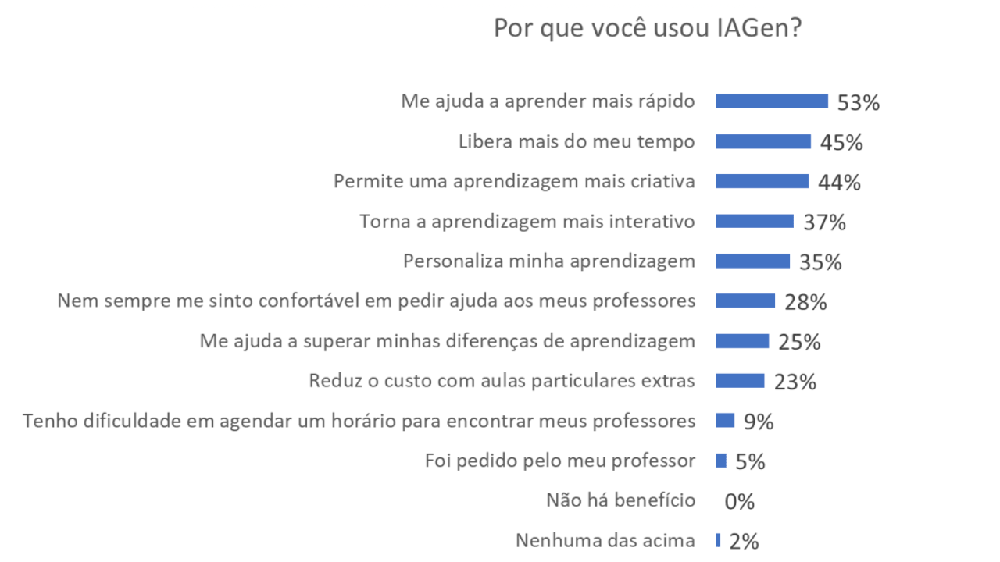
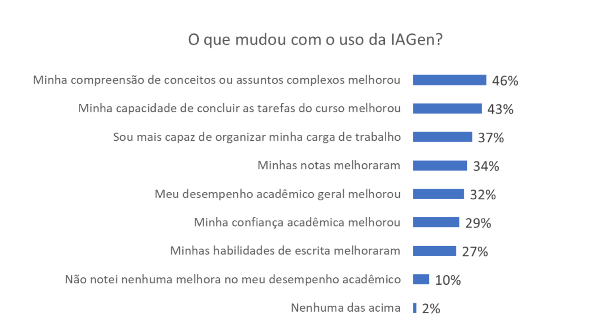
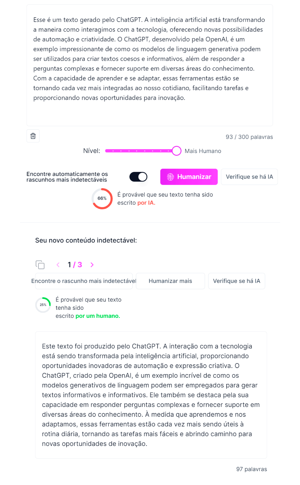

Módulo 5 . Aula 2
Inteligência Artificial: potencialidades e riscos para a educação.
Módulo 5 . Aula 2
Inteligência Artificial: potencialidades e riscos para a educação.
 Objetivos da
aula
Objetivos da
aula
Nesta aula você será apresentado à Inteligência Artificial Generativa (IAGen) e à sua relevância para a educação aberta, compreendendo seu papel nas práticas pedagógicas atuais.
- Explicar o que é IAGen e qual a sua relevância para a educação aberta.
- Reconhecer benefícios e riscos do uso da IAGen na educação.
- Analisar os usos que estudantes fazem da IAGen.
- Discutir o uso da IAGen para o plágio.
- Avaliar criticamente os diferentes usos da IAGen em educação, diferenciando aplicações que potencializam a aprendizagem daquelas que comprometem a integridade acadêmica.
O que é Inteligência Artificial Generativa (IAGen)?
A Inteligência Artificial Generativa (IA Generativa, IAGen ou IAG) é uma tecnologia capaz de gerar conteúdo a partir de descrições textuais (prompts). Atualmente, é comum que bons textos e imagens sejam gerados a partir de simples comandos, como:
- “Explique simplificadamente o que é Inteligência Artificial Generativa.”
- [imagine] “um gato digitando em um laptop com fundo branco”.
- “Escreva uma redação sobre IA e Educação.”
- “Elabore uma apresentação sobre Paulo Freire.”
- “Proponha exercícios de conversação em inglês.”
- “Crie um jogo para aprender frações”, “Revise o texto a seguir: [...]” etc.
Observe o exemplo: “Explique simplificadamente o que é Inteligência Artificial Generativa.”
“Inteligência Artificial Generativa (IA Generativa) é um ramo da inteligência artificial que se concentra em criar sistemas capazes de gerar novos conteúdos, como texto, imagens, música e muito mais, que são semelhantes aos criados por humanos. Em vez de apenas analisar dados e fazer previsões, como muitos outros tipos de IA, a IA Generativa pode produzir algo novo e original. [...].”
Resposta do Gemini (do Google): “A Inteligência Artificial Generativa (IA Generativa), também conhecida como IA Criativa, é como um artista digital superpoderoso! Imagine um sistema de IA que, ao invés de apenas analisar e organizar informações, consegue criar conteúdos totalmente novos e originais, como: Textos[...], Imagens[...], Músicas[...], Vídeos[...].”
Observe outro exemplo, agora com pedido de imagens: “Um gato digitando em um laptop com fundo branco.”
pan_tool_alt CliqueToque e arraste os cards para ver as informações
Inicialmente foi desenvolvida a tecnologia que gera imagens a partir de descrições textuais (modelo de texto-para-imagem). Em 2022, os modelos mais avançados tornaram-se capazes de gerar imagens que se assemelham a fotografias reais e a artes feitas por humanos. Um exemplo que viralizou foram as imagens do Papa Francisco vestindo um casaco branco estiloso, geradas pelo Midjourney, que fomentaram debates nas redes sociais e na televisão. Muitas pessoas acreditaram que as fotografias eram reais, embora a Igreja Católica seja muito conservadora em suas vestimentas. Essas imagens divulgaram o potencial e o perigo dessa IAGen, pois qualquer pessoa pode criar conteúdo convincente a partir de uma simples descrição textual, até mesmo imagens e vídeos com o objetivo de enganar (deepfake).
Posteriormente conseguiram desenvolver a tecnologia capaz de gerar bons textos com base em um modelo de linguagem de grande escala (Large Language Model - LLM). O ChatGPT, baseado no modelo GPT desenvolvido pela OpenAI, alcançou mais de 100 milhões de usuários nos dois primeiros meses após seu lançamento em novembro de 2022, quebrando todos os recordes de rápida popularização, tornando-se um fenômeno da cibercultura.
O jornal The New York Times noticiou:
“O ChatGPT é, simplesmente, o melhor chatbot de inteligência artificial já lançado para o público em geral”
(Roose, 2022).
O vertiginoso sucesso do ChatGPT desencadeou uma corrida entre as empresas de tecnologia para desenvolver o melhor sistema baseado em IAGen.
pan_tool_alt CliqueToque e arraste os cards para observar a reação dessas grandes empresas de tecnologia
Os modelos GPT-4 e Gemini são multimodais, capazes de receber texto e imagem como entrada e criar obras em diferentes linguagens. Por exemplo, o GPT-4o possibilita anexar uma imagem ao prompt e pedir explicações sobre ela, assim como anexar um arquivo PDF e fazer perguntas sobre o texto ou, ainda, solicitar um resumo. Ele também pode analisar dados, processar conteúdo da web, resumir vídeos do YouTube, criar narrativas visuais, construir mapas mentais, conversar por voz, traduzir fala em tempo real, criar vídeos, interagir por vídeo como se estivéssemos em uma videochamada com ele, renderizar imagens em 3D, entre outras capacidades.
A primeira versão lançada para o público geral foi o ChatGPT-3.5, de acesso gratuito, lançada em 30 de novembro de 2022. Em março de 2023 lançaram o GPT-4, acessível somente pelos assinantes do ChatGPT Plus, cuja mensalidade é de $20 dólares por mês. No ano seguinte, em maio de 2024, lançaram o GPT-4o, de acesso gratuito para todos. O GPT-5 foi disponibilizado em agosto de 2025, focando em inteligência mais robusta, capacidade multimodal avançada e maior memória de contexto. Depois disso já existem versões subsequentes (GPT-5.1 e GPT-5.2).
Os anos em torno da virada da década de 2010 para 2020 marcaram o boom da Inteligência Artificial, caracterizado por massivos investimentos em pesquisa e desenvolvimento em IA Generativa, sendo criadas empresas, mercados, novas práticas de trabalho e de consumo de conteúdo a partir de sua utilização em diversas áreas. Esse novo cenário sociotécnico nos levou a reconhecer que, em termos tecnológicos, 2020 é a década da Inteligência Artificial Generativa.
Tecnologias computacionais que marcaram as últimas décadas
1970
Grandes computadores centralizados utilizados por governos, universidades e grandes empresas para processamento de dados em larga escala.
1980
Expansão das redes que interligam computadores, permitindo a troca de informações entre instituições, universidades e empresas.
1990
Popularização dos computadores pessoais, permitindo que indivíduos e pequenas empresas utilizassem computadores em suas atividades diárias.
2000
A internet torna-se amplamente acessível ao público, impulsionando serviços online, comunicação digital e comércio eletrônico.
2010
A popularização dos smartphones e aplicativos móveis transforma a forma de acessar a internet e interagir com serviços digitais.
2015
Plataformas sociais passam a estruturar comunicação, marketing, entretenimento e produção de conteúdo em escala global.
2020
Avanços em inteligência artificial permitem gerar textos, imagens, códigos e outros conteúdos automaticamente.
2022
Lançada a primeira versão do ChatGPT baseada no GPT-3.5, disponibilizada gratuitamente para o público geral.
2023
Lançamento do GPT-4, acessível somente pelos assinantes do ChatGPT Plus.
2024
Lançamento do GPT-4o, modelo multimodal disponibilizado gratuitamente para todos.
2025
Lançamento do GPT-5, nova geração de modelos de inteligência artificial.
Cabe destacar que alguns dos sistemas baseados em IAGen são gratuitos, como o ChatGPT e o Gemini, enquanto outros são pagos, como o Midjourney. O direito sobre a obra gerada por esses sistemas pertence ao usuário que digitou o prompt, possibilitando a geração de conteúdo de qualidade a baixo custo. Isso é especialmente relevante para a educação, particularmente a Educação Aberta, que frequentemente carece de recursos financeiros para pagar por imagens e outros elementos desejáveis para a produção de conteúdo didático.
O GPT já foi até incorporado como o cérebro de um robô humanoide. Assista ao vídeo.
A capacidade e as limitações da IAGen em responder questões científico-educacionais
As tecnologias de IAGen estão sendo aperfeiçoadas a cada ano. Por exemplo, cada nova versão do GPT tem apresentado desempenho superior, medido por meio de testes padronizados (benchmarks).
Evolução do modelo GPT

No Brasil, testaram o GPT-4 com as questões do Enem (Nunes et al., 2023; Pires et al., 2023), cujos resultados são apresentados a seguir:
| Desempenho do GPT-4 no Enem 2022 e Enem 2023 | Enem 2022 | Enem 2023 |
|---|---|---|
| Linguagens e códigos | 82% | 87% |
| Ciências humanas | 96% | 100% |
| Ciências da natureza | 78% | 91% |
| Matemática | 61% | 66% |
| Total | 79% | 86% |
Fonte: Pires et al. (2023, p. 4)
Desempenho do GPT-4 em comparação com as pessoas que fizeram o Enem 2022 e 2023

O GPT-4 acertou 79% das questões do Enem 2022 e 86% das questões do Enem 2023. Ele apresentou excelente desempenho nas provas de Ciências Humanas, mas não apresentou desempenho tão bom em Matemática. Mesmo com essa limitação, poucas pessoas acertaram mais questões do que o GPT-4: a cada 773 pessoas, apenas uma acertou mais questões do que o GPT-4. Excetuando essa pessoa que acerta mais questões do que o GPT-4, ele é útil para todos os demais estudantes, porque pode apoiar o estudo do conteúdo cobrado nesse exame.
Apenas 2.164 pessoas acertaram mais questões do que o GPT-4, entre as 2.344.823 pessoas que fizeram as quatro provas do Enem 2022. No Enem 2023, apenas 4.331 pessoas acertaram mais questões do que o GPT-4, entre as 2.678.264 pessoas que fizeram as quatro provas. No total, o GPT-4 teve um desempenho melhor do que 99,87% das pessoas que fizeram as 4 provas do Enem de 2022 e 2023.
Ficou bem conhecida a dificuldade do GPT-4 e das versões precedentes em resolver problemas de Matemática. Por isso, modificaram a forma de treinar o modelo e a versão posterior, o GPT-4o, apresentou melhora significativa na resolução de problemas matemáticos. Essa versão também apresentou melhora no desempenho em Ciências Naturais (Física, Química e Biologia) e na compreensão de textos longos, conforme indicaram os testes internacionais padronizados.
Comparação das sucessivas versões do GPT em relação ao percentual de acerto em testes padronizados

O GPT-4o também melhorou a capacidade de gerar textos em diversos idiomas, incluindo o português. Ele também apresentou melhoras em testes de conhecimento profissional, como em Programação e no exame de admissão à advocacia nos Estados Unidos — Uniform Bar Exam, equivalente ao exame da Ordem dos Advogados do Brasil (OAB) —(OpenAI, 2023b; 2024b). Até o momento em que escrevemos este texto, não havia uma pesquisa sobre o desempenho do GPT-4o nos exames específicos do Enem. No entanto, com base nos resultados de testes padronizados, podemos prever que ele apresentará um desempenho ainda melhor do que o GPT-4. Podemos até supor que, em breve, as próximas versões do GPT acertarão mais questões no Enem do que qualquer pessoa será capaz de acertar.
O GPT-4o, contudo, não é um especialista nas diferentes áreas de conhecimento. Ele foi treinado com textos da Wikipédia e de outras fontes, de modo que não se equipara a um pesquisador-doutor em uma área específica. Perguntas que requerem conhecimento muito avançado nem sempre são bem respondidas pelo GPT-4o.
Às vezes, a IAGen gera conteúdo com informações absurdas, mas, por gerar um texto bem escrito, pode parecer que está mentindo ou tendo uma “alucinação” (OpenAI, 2023a). Entretanto, a IAGen não tem intencionalidade, não quer nos enganar ou agradar; também não tem semântica, nem tem como julgar se a informação gerada é verdadeira ou falsa.
O compromisso da IAGen é gerar conteúdo parecido com os dados utilizados em seu treinamento, sem garantias da veracidade das informações geradas. Para lidar com essa limitação, pesquisadores e desenvolvedores buscam soluções. Por exemplo, no Gemini, após a geração de uma resposta, é feita uma busca na internet por conteúdos semelhantes visando a checagem da informação.
A possibilidade de alucinação aumenta se o modelo tiver sido treinado com pouco conteúdo relacionado ao prompt digitado pelo usuário. Por exemplo, o GPT-3 processou poucos textos em português (OpenAI, 2020), portanto possui poucas informações sobre a nossa história, cultura, valores, costumes e crenças, o que aumenta a chance de alucinar em perguntas relacionadas ao Brasil.
As informações geradas pelo modelo de linguagem também ficam datadas em função de seu treinamento. Ao ser perguntado sobre resultados de eleições em 2024, o GPT-3.5 dava informações atrasadas, citando ainda resultados de anos anteriores. Para lidar com essa limitação, alguns sistemas recuperam informações da internet em tempo real para gerar respostas atualizadas.
É importante conhecer as limitações da IAGen, como a possibilidade de alucinação, a incapacidade de julgamento sobre a veracidade das informações geradas, a limitação dos dados utilizados em seu treinamento e a não atualização do modelo.
Conhecer as limitações da IAGen nos possibilita interagir melhor e dar sentido às suas respostas, especialmente quando estão equivocadas ou são supérfluas. Conhecendo melhor a IAGen, aprendemos a identificar em que situações ela é útil e em quais não se aplica.
As limitações da IAGen, no entanto, não a tornam inútil. Assim como o GPT-4 respondeu bem às questões do Enem, melhor do que 99,8% das pessoas, esse e outros sistemas baseados em IAGen podem ser muito úteis em diversas atividades educacionais, especialmente no contexto da Educação Aberta, quando não há um professor sempre disponível para tirar dúvidas do estudante sobre o conteúdo estudado.
Como a IAGen está sendo utilizada por estudantes?
Ao questionarmos os estudantes de um curso presencial de Computação, identificamos que eles estão utilizando o ChatGPT com muita frequência e para diversas finalidades (Carvalho; Pimentel, 2023). Alguns o utilizam para pesquisar, preferindo consultá-lo em vez de usar um mecanismo de busca na web. Há estudantes que utilizam o ChatGPT como uma espécie de professor particular que lhes ensina o que não foi bem compreendido a partir da explicação do professor humano ou do conteúdo didático:
“Se alguma disciplina me apresenta um conteúdo novo, eu logo penso: ‘Vamos ver o que o ChatGPT diz sobre esse tema.’ Por exemplo, houve uma semana em que me ausentei das aulas e, após saber quais os conteúdos que foram dados, foi muito fácil e rápido entrar na plataforma [ChatGPT] e conseguir ter uma breve noção do que foi visto.”
(Joana)
Muitos estudantes fazem uso dessa tecnologia para apoiar a autoria, como se ela fosse uma parceira intelectual, uma coautora na criação de obras, seja uma redação, uma apresentação ou um trabalho acadêmico:
“Toda vez que preciso fazer algum trabalho da faculdade, eu utilizo a IA.”
(Allanis)
Os estudantes reconhecem as limitações da tecnologia e desenvolvem táticas para lidar com os problemas típicos do ChatGPT:
“Acredito que não posso confiar cegamente no que obtenho ali, e sempre reviso para verificar se realmente está correto.”
(Rebeca)
“Estou aprendendo a usar de maneira mais eficiente, descobri que ‘falando’ do jeito certo é possível obter resultados muito melhores e mais precisos, que me renderam grandes avanços em algumas atividades.”
(Augusto)
Os depoimentos revelam que os estudantes não são acríticos ou “idiotas culturais”; eles não aceitam tudo o que o ChatGPT apresenta como resposta. Em suas artes de fazer, os estudantes inventam múltiplos usos da IAGen, produzindo outros modos de estudar e aprender que ainda não foram enquadrados pelas lógicas hegemônicas das escolas e universidades. Esses usos inventivos da IAGen são forjados por estudantes situados culturalmente, produtores de conhecimento, seres pensantes que criam e aprendem em parceria com a IAGen. Cabe às escolas e universidades apoiar os estudantes a desenvolverem as competências digitais necessárias para lidar adequadamente com a inteligência artificial (Vicari et al., 2023).
Os depoimentos aqui analisados não são representativos da totalidade dos estudantes universitários de nosso país, pois foram obtidos de uma amostra de estudantes de um único curso de Computação. A Pesquisa Global de Estudantes 2023 (Chegg.org, 2023), por sua vez, realizou uma pesquisa online visando obter dados de uma amostra mais ampla de estudantes universitários de todo o mundo, inclusive do Brasil. Essa pesquisa identificou que a maioria dos estudantes brasileiros já estava usando a IAGen desde meados de 2023:
Frequência de uso de IAGen indicada por estudantes brasileiros em meados de 2023

Ao questionar os universitários sobre os usos que estavam fazendo da IAGen, a pesquisa obteve resultados semelhantes aos discutidos anteriormente: os estudantes utilizam a IAGen para diferentes atividades, como aprender, pesquisar, gerar ideias ou rascunhos de tarefas, escrever textos, elaborar apresentações, verificar o dever de casa, preparar-se para as provas e ajudar a fazer o dever de casa:
Finalidades de uso de IAGen indicadas por estudantes brasileiros em meados de 2023

Ao serem questionados sobre os motivos de usarem a IAGen, a maioria dos estudantes declarou utilizá-la porque os ajuda a aprender mais rapidamente. Muitos também indicaram que a IAGen possibilita uma aprendizagem mais criativa, interativa e personalizada.
Motivos para usar a IAGen indicados por estudantes brasileiros em meados de 2023

Chamou nossa atenção o fato de muitos estudantes justificarem o uso da IAGen por “liberar mais do meu tempo”. Isso levanta a seguinte questão:
Será que estão colando do ChatGPT para não “perder tempo” ao fazer as tarefas de casa, como temem muitos professores?
Embora sejam pertinentes as suspeitas sobre o uso ético, responsável e proveitoso da IA, cabe destacar que, na percepção dos estudantes, a IAGen possibilita melhor compreensão de conceitos e assuntos complexos, desenvolve habilidades de escrita, aumenta a capacidade de concluir tarefas e de organizar a carga de trabalho acadêmico, aumenta a confiança acadêmica, melhora as notas e o desempenho acadêmico no geral.
Percepção de mudanças com o uso da IAGen

A maioria dos estudantes da pesquisa está ciente de que a IAGen pode ser usada para “trapacear” e que informações incorretas podem ser geradas (Chegg.org, 2023, p. 22). Apesar dessas preocupações, parece evidente, para a maioria dos estudantes universitários brasileiros, que a IAGen é uma tecnologia muito útil para o estudo e a aprendizagem, por isso estão utilizando-a frequentemente. Por tudo isso é importante produzirmos reflexões sobre essas tecnologias que estruturam nossas sociedades e culturas atravessando nosso cotidiano, mediando nossas experiências e aprendizagens, moldando nossos comportamentos, nossas práticas de estudo e nossos sistemas educacionais.
A Pesquisa Global de Estudantes 2023 está disponível em: https://www.chegg.org/global-student-survey-2023. Essa pesquisa objetivou compreender, principalmente, o impacto da IA generativa no ensino superior na perspectiva de estudantes de graduação com idades entre 18 e 21 anos em 15 países. Foi empregada uma metodologia de pesquisa online, realizada entre 31 de julho e 16 de agosto de 2023. O tamanho da amostra global foi de 11.816 estudantes, com tamanhos de amostra variando de 503 a 1.018 em cada país.
Quais são as preocupações dos professores?
A maior parte dos professores, em um primeiro momento, ficou temerosa com a novidade: “os alunos vão plagiar do ChatGPT”; “ele fará os deveres de casa, as redações e os trabalhos escolares/universitários”; “os estudantes se tornarão pessoas acríticas, preguiçosas e dependentes da tecnologia.”
“Ainda não há maturidade para usar a ferramenta como meio de auxiliar o processo de ensino-aprendizagem. Essa IA, mal utilizada, pode atrapalhar o desenvolvimento do aluno na construção autônoma de trabalhos, nas respostas discursivas e construções críticas.”
(Professor do Ensino Médio e Fundamental)
Pedir para o ChatGPT resolver as atividades escolares/universitárias é uma forma de utilizar a IAGen, mas não é a única. Alguns estudantes mobilizam o ChatGPT em um processo de trocas, questionamentos, aprofundamentos, de idas e vindas — o que caracterizamos como conversação e autoria híbrida. Esse tipo de uso é diferente do plágio, pois não se resume a copiar e colar tudo o que é gerado pela IA sem questionar nem se envolver ativamente na construção da obra e do conhecimento. Não consideramos a conversação e a cocriação com a IA como uma trapaça acadêmica, mas sim um esforço para aprender e fazer melhor a partir da interação com essa tecnologia.
A preocupação dos professores é que estudantes entreguem suas mentes e vozes para a IAGen fazer os deveres de casa por eles. De fato, após o lançamento do ChatGPT, passou a ser difícil afirmar se um texto foi escrito por um estudante ou pela IA.
Considerando essa dificuldade, foram desenvolvidos “detectores de IA”, ou seja, sistemas computacionais que buscam identificar se um texto parece ter sido escrito por IA ou por humano. Um texto gerado por IA costuma ser original, por isso não adianta compará-lo com os textos existentes, como fazem os sistemas de detecção de plágio. A estratégia utilizada pelos detectores de IA é analisar o texto em busca de características que possam indicar uma autoria artificial, como o estilo de escrita, o uso de certos recursos de linguagem e a ausência de erros gramaticais e ortográficos. No entanto, os sistemas detectores de IA podem errar: um texto humano pode ser erroneamente classificado como tendo sido gerado por IA, ou um texto gerado computacionalmente pode ser erroneamente classificado como sendo humano. Exemplificamos a análise feita pelos detectores de IA sobre um texto gerado pelo GPT-4o: dois acertaram ao afirmar que o texto foi gerado por IA e um errou ao afirmar que o texto foi produzido por humano.
Após a popularização dos detectores de IA, foram desenvolvidos sistemas para “humanizar texto de IA”. Tais sistemas modificam um texto com vista a enganar os detectores de IA introduzindo nele pequenas variações no estilo de escrita, adicionando alguns erros e modificando o tom e a fluidez da redação. Um texto “humanizado” leva o detector de IA a concluir, equivocadamente, que o texto provavelmente foi escrito por uma pessoa.
Sistema “humanizador” de texto gerado por IA (via Stealthwriter.AI)

Conheça alguns sistemas para humanizar texto de IA:
- Stealthwriter AI: https://stealthwriter.ai/
- AIHumanizer: https://aihumanizer.ai/
- Humbot: https://humbot.ai/ (testa gratuitamente até 100 palavras).
Concordamos com a afirmação: “Não tente detectar a IA — faça com que o uso da IA não seja o problema” (MIT Technology Review, 2024). Em vez de proibirmos o uso da IAGen para manter a educação como estava antes de sua chegada, em vez de vigiarmos e punirmos quem a utiliza, devemos repensar as práticas educativas. Em nosso tempo de escola, nas décadas de 1980 e 1990, nossos pais nos ensinaram a realizar os trabalhos escolares copiando de uma enciclopédia física. Torcemos para que esse tipo de atividade não seja mais uma prática nas escolas e universidades, que as atividades não possam mais ser feitas copiando-se um texto, seja da enciclopédia, da internet ou da IAGen; que as atividades não possam ser feitas por uma inteligência artificial que pouco ou nada conhece sobre seu usuário.
A IA deixa de ser um problema quando valorizamos subjetividade, saberes, histórias de vida e formação, acontecimentos vividos, formas de compreender o mundo, sentimentos, desejos, medos, ideologias e demais facetas de identidades únicas e insubstituíveis, que ainda não podem ser geradas por IA.
A necessidade de uma educação para o uso da IAGen
Não se trata de julgarmos a IAGen exclusivamente como boa ou ruim, mas de compreender que ela pode ser usada tanto para potencializar a aprendizagem quanto para promover trapaça acadêmica, dependendo dos usos que fazemos dela. A IAGen pode fornecer feedback das atividades e exercícios feitos pelos estudantes, pode apoiar a compreender o conteúdo, tirar dúvidas e cocriar. Ela é especialmente útil nas modalidades educacionais em que os estudantes não têm acesso facilitado a professores, como na Educação a Distância e na Educação Aberta. É fato que a IAGen também pode ser usada para gerar as respostas de muitos exercícios e atividades propostos por professores e livros didáticos.
Portanto, é necessária uma educação que ensine a usar essa tecnologia de forma ética, responsável e potencializadora da formação. Precisamos de uma educação que ensine nossos estudantes a pensarem com a IAGen, sem entregar a ela suas mentes e vozes, sem utilizá-la para o plágio. Esse é um dos principais desafios da formação na era da IAGen.
Como citar esta aula:
PIMENTEL, Mariano; CARVALHO, Felipe. Inteligência Artificial Generativa na Educação Aberta: potencialidades e riscos. Programa de Formação Modular em Ciência Aberta. Módulo 5. Educação Aberta e Recursos Educacionais Abertos Aula 2. 1. ed. Rio de Janeiro: Fiocruz, 2025. Disponível em: https://mooc.campusvirtual.fiocruz.br/rea/ciencia-aberta-2ed/modulo5/aula2.html